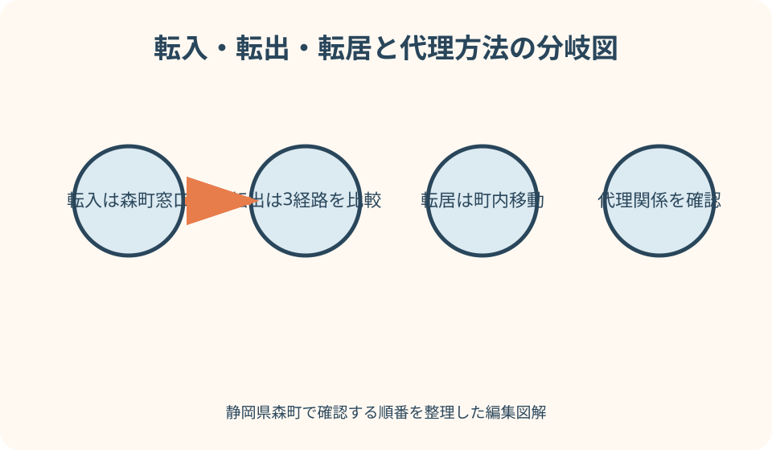
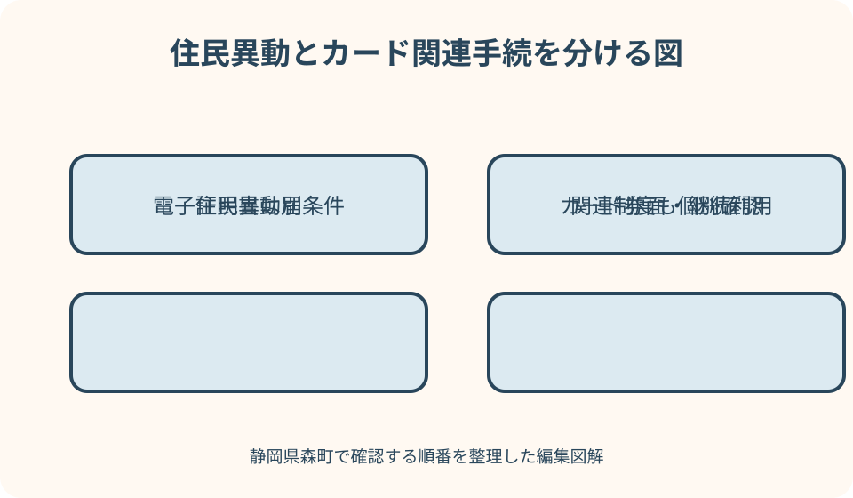

行政手続・証明書｜最終確認 2026-08-10
静岡県森町で住所異動届を代理人が出すには｜転入・転出・転居と委任状を分けて確認
住所異動届を代理人へ頼むときは、転入・転出・転居のどれかを先に決めます。さらに、住民票を動かす届出、マイナンバーカードの住所変更、署名用電子証明書の再発行、国民健康保険などの関連手続は、同じ委任状で同時に完了するとは限りません。森町公式の三つの届出案内を基に、本人、同一世帯員、二親等以内、その他の代理人を分けます。

編集イラスト最初に転入・転出・転居のどれかを確定する
住所が変わる手続をすべて『転居届』と呼ぶと、窓口、期限、持ち物を取り違えます。森町外から森町へ入るのが転入、森町から別の市区町村へ出るのが転出、森町内で住所を移すのが転居です。代理人へ頼む前に、新旧住所と実際に住み始める日を一枚に書きます。
転入届は、新しい住所に住み始めてから森町役場で行います。森町公式は引っ越し完了後十四日以内と案内し、マイナポータルでできるのは転入予約であって届出そのものではないと明記しています。代理人がオンライン予約を見せるだけでは転入完了になりません。
転出届は、森町公式では引っ越し予定日の十四日前から受け付けます。窓口に加え、郵送や、条件を満たす本人によるマイナポータルのオンライン転出が候補です。代理人が窓口へ行く方法と、本人がオンラインで出す方法を比較し、同じ届出を二重に送らないようにします。
転居届は、森町内で住み始めてから十四日以内に窓口で行います。オンラインで来庁予約はできても、届出は窓口が必要です。代理人は旧住所、新住所、世帯主、異動者全員、異動日を正確に確認し、賃貸契約日ではなく実際の居住開始日を本人へ聞きます。
委任状が不要と書かれた関係も事前確認する
森町の転入・転出・転居ページでは、本人、同一世帯員、二親等以内の人が届ける場合は委任状不要という案内があります。ただし、氏名や住所だけで二親等関係を確認できない場合、追加資料や説明を求められる可能性があります。『家族だから何も要らない』と短縮しません。
同一世帯員とは、住民登録上で同じ世帯に属する人です。同じ建物に住んでいても世帯分離していれば、同一世帯員とは限りません。これから同じ世帯になる予定というだけで、現在の同一世帯員として扱われるとも決めつけず、森町へ新旧の世帯関係を伝えます。
二親等以内には配偶者、親子、祖父母と孫、兄弟姉妹などが含まれますが、婚姻関係や姻族を含む具体的な数え方で迷う場合は窓口へ確認します。関係を示す戸籍等を先に取る必要があるかも聞き、本人との関係を口頭だけで押し通さないようにします。
委任状不要の関係でも、代理人自身の本人確認は必要です。運転免許証やマイナンバーカードなど、森町が認める書類を準備します。期限切れの書類、氏名変更前の書類、住所が一致しない書類を使えるかは来庁前に確認してください。
その他の代理人は本人が委任内容を具体的に書く
本人・同一世帯員・二親等以内に当たらない人が届ける場合は、本人が作成した委任状を用意します。森町は住所異動用の委任状と、本人が書けない場合の代筆用様式を公式ページで公開しています。インターネットで見つけた他自治体の様式より森町の最新版を使います。
委任状には、委任者と代理人の住所・氏名、委任する手続、作成日などを記載します。『役場の手続一切』のような広すぎる表現では、転入届、カード住所変更、電子証明書、国保手続のどこまで意思確認できるか不明です。森町の様式で該当する異動届を選びます。
委任状は原則として本人の意思に基づき本人が作成します。代理人が空欄を埋めたり、本人の署名をまねたりしてはいけません。本人が身体的な事情で書けない場合は、森町の代筆用様式の要件を読み、代筆者、理由、立会い等の記載が必要か確認します。
書き損じた場合の訂正方法、押印の要否、電子印刷した氏名の扱いは、様式の注意と窓口回答に従います。過去の手続経験から押印を一律の条件と決めつけず、逆に署名だけで何でも委任できるとも考えません。完成した委任状の写真を不特定のチャットへ送らず、代理人へ安全に渡します。

転出届は窓口・郵送・本人オンラインを比較する
本人が森町役場へ行けない転出では、代理人来庁だけが選択肢ではありません。森町は、転出後に届出をしていない人向けの郵送方法を案内し、マイナンバーカード保有者にはマイナポータルからのオンライン転出も案内しています。本人が操作できるなら、委任状を用意する前に比較します。
郵送転出では、住民異動届または必要事項を書いた請求、届出人の本人確認書類の写し、返信用封筒、関係に応じた委任状などが案内されています。新住所、転出日、新世帯主、旧住所、日中連絡先を正確に書きます。郵便日数と不備連絡を見込みます。
マイナポータルのオンライン転出は、届出人本人がカード等で電子署名して送信する仕組みです。デジタル庁のオンラインサービス案内も、引越す人が電子署名して転出届と来庁予定を送る流れを示しています。一般のマイナポータル代理人設定が、そのまま転出届の代理送信を認めるとは限りません。
代理人窓口を選ぶ場合は、森町での旧住所、転出予定日、新住所、異動者、世帯主を本人から確認します。国保、介護、こども医療、印鑑登録証など返却・関連手続もあります。住民異動届だけ出して関連資格も全て自動終了するとは考えません。
転入届の代理とカード継続利用を分離する
森町への転入届には、前住所地の転出証明書、窓口へ来る人の本人確認書類、所有者のマイナンバーカードなどが関係します。引越しワンストップや特例転出を利用した場合は、転出証明書の紙ではなくカードを使う流れがあります。どの転出方法だったかを代理人へ伝えます。
代理人が転入届を受理してもらえたことと、異動者全員のマイナンバーカード継続利用・券面住所変更が即日完了することは別です。森町公式は、本人以外がカードを持参すると一部手続がすぐにできない場合があると明記しています。カードを預ければ全部終わるとは限りません。
森町の案内では、カード継続利用の住所変更は同一世帯員なら委任状なし、それ以外は委任状が必要とされています。一方、署名用電子証明書の住所変更は基本的に本人手続で、代理人の関係によって即日可否や照会回答書の郵送が分かれます。住民異動用の委任だけで電子証明書まで含むと断定しません。
転入後のカード継続利用には期限があり、森町は転入手続後九十日以内に行わないとカードが失効すると案内しています。さらにマイナポータルは、実際に住み始めてから十四日以内の転入届もカード有効性に関係すると示しています。代理届出後にカード処理が残った人は期限を別々に記録します。
転居届ではカード・在留カード・保険を分ける
森町内の転居届は窓口で行い、異動者が持つマイナンバーカードまたは住民基本台帳カード、外国人住民の在留カード、国保・介護等の書類が案内されています。代理人は異動者全員分を預かってよいか、原本が必要か、暗証番号を誰が入力するかを確認します。
住所変更によりマイナンバーカードの券面追記が必要です。さらに署名用電子証明書は住所変更に伴い失効するため、オンライン申請を使う人は再発行を確認します。転居届が受理されても、代理人関係によって電子証明書まで即日処理できない可能性があります。
外国人住民は、転居する人全員分の在留カードが必要と森町は案内しています。在留カードの記載変更をマイナンバーカードの処理と混同せず、代理持参の可否や本人同行の要否を確認します。国籍や在留資格により個別書類がある場合は、一般の家族代理の説明だけで進めません。
国民健康保険、後期高齢者医療、介護保険の加入者は、資格確認書や被保険者証等の住所変更が関係します。住民票が変わればすべての紙面が自動更新されると考えず、各担当で代理申請に同じ委任状を使えるか尋ねます。印鑑登録証は森町内転居後も使用できるという町の注意も確認します。
良い点
代理人を利用する良い点は、本人が入院、仕事、育児、遠方滞在などで来庁できなくても、住所異動の期限へ対応する選択肢が持てることです。誰が届けるかを早めに決めれば、委任状の郵送や本人確認書類の準備へ時間を使えます。
転入・転出・転居を分けると、オンライン、郵送、窓口の候補が見えます。転出は本人オンラインや郵送を比較でき、転入・転居は窓口が必要です。すべて代理人来庁で進める前に、本人が安全に完了できる方法を選べます。
住民異動とカード手続を別欄にすると、届出が受理された後の漏れを減らせます。代理人が住民異動だけ完了し、本人が後日カード継続利用や電子証明書を行うという分担もできます。『一度で全部』を目標にせず、期限順に処理できます。
委任内容を具体的に書くことで、本人の意思を守れます。代理人が必要以上の証明書取得、印鑑登録、保険手続まで広げないよう、任せる範囲を限定できます。窓口側も代理権を確認しやすく、追加照会の理由が明確になります。
注文したい点
注文したいのは、森町公式で委任状不要とされる関係が比較的広い一方、カード継続利用と電子証明書では別の代理条件が続く点です。初めての人は同じページの一連の手続に見えます。届出、券面変更、電子証明書を横並びにした代理可否表があると理解しやすくなります。
『同一世帯』は同居家族と同じ意味ではありません。住所が同じでも世帯分離している場合や、転入前後で世帯関係が変わる場合を短い例で示す案内が必要です。窓口で初めて委任状不足と分かると、引越し直後の再訪負担が大きくなります。
森町の委任状ページには通常様式と代筆用様式がありますが、住所異動とカード関連のどこまで兼ねられるかをフォーム上で選べると便利です。署名用電子証明書では照会回答書が必要になる場合があるため、同日完了できない条件も目立つ表示が望まれます。
引越しワンストップは名称からすべてオンライン完了する印象がありますが、転入・転居届は窓口が必要です。代理人設定のあるマイナポータル機能とも範囲が違います。オンラインでできるのは転出届と来庁予定連絡という国の説明を、町のページでも繰り返し明確にしたいところです。
本人確認書類は委任者分と代理人分を混ぜない
代理人来庁では、窓口へ来た代理人自身の本人確認書類が必要です。委任者の運転免許証のコピーだけを持参しても、来庁者本人の確認にはなりません。森町が示す顔写真付き一点または顔写真なし二点の区分を当日に確認します。
一方、手続によっては異動者本人のカード、転出証明書、在留カード、保険関係書類なども必要です。これらは代理人の本人確認書類とは役割が違います。袋を『来庁者確認』『異動者の原本』『委任関係』『返却物』に分けると、窓口で取り違えにくくなります。
マイナンバーカードの暗証番号を紙へ書き、カードと一緒に代理人へ渡すことは避けます。代理処理で暗証番号が必要な場合、本人が封かんした書類や照会回答書など町指定の方法があるか確認します。代理人が本人から口頭で聞き、窓口端末へ入力する方法を当然としません。
本人確認書類のコピーを委任状へ添付する必要があるか、原本提示かは手続ごとに確認します。マイナンバーカード裏面の個人番号、健康保険関係の記号番号など、不要な情報をむやみに複写しません。郵送転出では森町のマスキング案内にも従います。

住所異動と同時に残る関連手続を棚卸しする
住所異動の窓口では、国民健康保険、後期高齢者医療、介護保険、こども医療、学校、印鑑登録などが関係します。代理人が住民異動届を出せることと、各制度の申請者資格は別です。本人が加入・受給している制度だけを一覧にします。
転出では印鑑登録が廃止され、森町公式は印鑑登録証などの持参を案内しています。転居では印鑑登録証をそのまま使えるとされています。転出と転居を取り違えると、返す必要のない証書を返したり、新住所地で必要な登録を忘れたりします。
子どもがいる世帯では転校、こども医療、児童手当、予防接種などの担当が分かれます。親の住所異動用委任状で学校や給付の全手続まで代理できると考えず、教育・子育て担当へ別の申請と期限を確認します。受給者を変更する場合はさらに条件が変わる可能性があります。
犬の登録、水道、税、運転免許、郵便転送、民間契約も住民異動届だけでは完結しません。代理人へ全てを任せず、行政窓口、警察、事業者の担当を分けます。本人しか変更できない契約やオンライン本人確認が必要なものは、引越し前に本人が処理します。
予定どおり終わらない場面を先に想定する
委任状の手続名が曖昧、日付が古い、本人の署名確認ができない場合は、その日に受理されない可能性があります。代理人はその場で本人に電話し、委任状を書き換えるのではなく、町の指示を聞いて再作成します。期限が迫る場合の相談方法も確認します。
転出証明書をなくした、オンライン転出の処理状況が未完了、転出予定日と実際の居住開始日が違う場合は、転入届が止まることがあります。代理人は推測した日付を書かず、前住所地と本人へ確認します。二重届出や空白期間を作らないよう自治体同士の確認を待ちます。
カード暗証番号が分からない場合、住民異動届だけ受理し、カード処理を後日に分けることがあります。暗証番号候補を代理人が繰り返し試すとロックにつながります。本人が来庁できる日、再設定、照会回答書の経路を森町へ確認します。
本人が既に海外、施設、病院へ移り、委任状を通常どおり作れない場合は、家族関係だけで代理できると断定しません。法定代理人、成年後見、代筆、郵送、国外転出など該当する事情を伝え、森町から必要書類の個別案内を受けます。
代案・結論
本人が転出届を出すだけなら、マイナンバーカードと署名用電子証明書を使ったオンライン手続が代案です。対応環境と暗証番号が必要で、代理人が本人のカードを借りて送信する方法ではありません。本人が操作できなければ窓口代理または郵送を検討します。
転入・転居では窓口届出が必要なため、本人が行けない場合は代理人の関係、委任状、本人確認書類を森町へ事前確認します。住民異動だけ先に受理できるなら、カードや電子証明書は本人の来庁日に分けます。期限をそれぞれメモし、後日の処理を忘れないようにします。
代理人が遠方から来る場合は、電話で新旧住所、異動日、世帯主、異動者全員、代理関係、カード保有、外国籍、保険加入を伝えます。『必要な物を全部教えて』ではなく、転入・カード継続利用・電子証明書という手続名ごとに質問します。
結論として、住民異動届を代理できるかと、カード等を代理処理できるかを二段に分けます。森町公式の関係区分を確認し、必要なら本人作成の委任状と代理人の本人確認書類を用意します。転入・転出・転居のどれかを明示することが、正しい入口になります。
大石の視点
大石の視点では、家族に役場手続を頼むときほど、口頭の『引越しお願い』で済ませないことが大切です。旧住所、新住所、実際に住み始めた日、世帯主、代理人の担当範囲を一枚にします。代理人が判断する余白を減らすことが本人の意思を守ります。
森町は町なかと北部で役場への移動負担が違います。三倉や天方から代理人が来庁し、不足書類で戻るのは大きな負担です。委任状の要否だけでなく、カード、暗証番号、照会回答書、保険証書まで電話で分けて確認してから出発します。
便利だからと家族へマイナンバーカードと暗証番号を丸ごと預ける方法は選びません。カードを持参する必要があっても、暗証番号は本人が管理し、代理手続用の封かん方法を町へ確認します。家族支援と秘密情報の共有は同じではありません。
代理人が完了報告をするときは、『転入届受理』『カード継続利用は未了』『電子証明書は照会書待ち』『国保手続済み』のように項目別に伝えます。役場へ行ったという事実だけでは、本人が次に何をすべきか分かりません。未了事項を残す記録が実用的です。
代理人へ渡す一枚の確認票
確認票の先頭には、届出種類、異動者全員の氏名・生年月日、旧住所、新住所、異動日、新旧世帯主を書きます。アパート名と部屋番号、方書も省略しません。転入なら前住所地が発行した転出証明書またはオンライン転出の状況を記載します。
次に、代理人と本人の関係、委任状要否、代理人本人確認書類を書きます。二親等以内として委任状不要の案内を使う場合も、関係を示す資料が必要か確認した日を記載します。その他代理人なら、森町様式の委任状原本を封筒へ入れます。
カード欄では、異動者ごとのマイナンバーカード、住基カード、在留カードの有無を分けます。住民異動、券面住所変更、継続利用、署名用電子証明書の四つに完了欄を設けます。暗証番号そのものは確認票へ書きません。
関連手続欄には、国保、後期、介護、こども医療、印鑑登録、学校など該当するものだけを書きます。窓口が違う場合の移動順、別委任状の要否、返す証書を確認します。不要な制度名を並べず、本人が実際に利用するものへ絞ります。
窓口での確認と本人への引継ぎ
代理人は受付時に、自分が本人・同一世帯員・二親等以内・その他代理人のどれに当たるかを伝えます。住民異動の種類と、カード関連も希望するかを最初に分けます。窓口職員の質問へ分からない日付を推測して答えず、本人へ確認する項目として残します。
受理後は、異動日、新住所、世帯主が届出内容どおりかを確認します。転入ならカード継続利用の期限、転居なら券面変更、転出なら転出証明情報と印鑑登録の扱いを聞きます。受付票や返却書類を異動者ごとに整理します。
即日できなかったカード・電子証明書手続については、誰が、何を持ち、いつまでに来庁するかを具体化します。照会回答書が本人住所へ送られるなら、受取後の記入・封かん・代理持参の順を確認します。代理人が開封して暗証番号を見ることは避けます。
本人への報告は、完了、保留、次回持ち物、期限の四欄で行います。委任状や本人確認書類のコピーを漫然と保管せず、返す原本と処分する写しを分けます。住所異動後の生活手続を誰が続けるか決めて、代理来庁を完了させます。
公式情報・確認先
掲載内容は次の一次情報を基礎に整理しました。営業、料金、催し、交通は変わるため、出発前または手続き前にリンク先で最新情報を確認してください。
- 転入届（静岡県森町、2026-08-10確認）
- 転出届（静岡県森町、2026-08-10確認）
- 転居届（静岡県森町、2026-08-10確認）
- 申請書（委任状・住民票・印鑑証明・戸籍）（静岡県森町、2026-08-10確認）
- 引越し手続オンラインサービス（デジタル庁、2026-08-10確認）
- 引越し関連手続一覧（マイナポータル、2026-08-10確認）